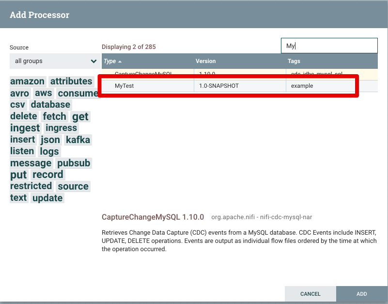

[Nifi] Custom Processor 생성 및 테스트 With Docker
nifi에 커스텀 프로세서를 등록할 일이 생겼는데, 커스텀 프로세서를 빌드한 후 테스트 하기가 까다로워 도커를 이용하여 로컬에 환경을 구축하고 간단하게 테스트 하는 방법을 적용해 보았다.
1. 프로젝트 생성
아래는 maven이 설치 된 환경에서 진행했으며, maven이 설치되지 않았다면 Installing Apache Maven 을 참고하여 maven을 설치하고 진행하도록 하자.
$ mvn archetype:generate
## 아래와 같이 Choose a number .. 라고 나오면 nifi를 입력하여 nifi archetype을 검색하자.
Choose a number or apply filter (format: [groupId:]artifactId, case sensitive contains): 1462: nifi
## 이번에는 custom processor를 만들 것이기 때문에 nifi-processor-bundle-archetype을 선택하자.
Choose archetype:
1: remote -> org.apache.nifi:nifi-processor-bundle-archetype (-)
2: remote -> org.apache.nifi:nifi-service-bundle-archetype (-)
Choose a number or apply filter (format: [groupId:]artifactId, case sensitive contains): : 1
## 아키타입 버전이 나오는데, 현재 사용중인 클러스터의 버전과 동일하게 선택한다.
Choose org.apache.nifi:nifi-processor-bundle-archetype version:
1: 0.0.2-incubating
2: 0.1.0-incubating
3: 0.2.0-incubating
4: 0.2.1
5: 0.3.0
6: 0.4.0
7: 0.4.1
8: 0.5.0
9: 0.5.1
10: 0.6.0
11: 0.6.1
12: 0.7.0
13: 0.7.1
14: 0.7.2
15: 0.7.3
16: 0.7.4
17: 1.0.0-BETA
18: 1.0.0
19: 1.0.1
20: 1.1.0
21: 1.1.1
22: 1.1.2
23: 1.2.0
24: 1.3.0
25: 1.4.0
26: 1.5.0
27: 1.6.0
28: 1.7.0
29: 1.7.1
30: 1.8.0
31: 1.9.0
32: 1.9.1
33: 1.9.2
34: 1.10.0
Choose a number: 34: 34
## 아래와 같이 groupId, artifactId, version, artifactBaseName, parckage를 입력하여 프로젝트를 생성
## 아래와 같은 파라미터로 프로젝트를 생성하면 프로젝트 디렉토리명은 artifactId로 생성이 되고, 해당 프로젝트 하위로 들어가면(여기서는 my-custom-project)
## nifi-{artifactBaseName}-nar 와 nifi-{artifactBaseName}-processors 프로젝트가 생성된 것을 볼수 있다.
Choose a number: 34: 34
Define value for property 'groupId': io.github.krespo
Define value for property 'artifactId': my-custom-processor
Define value for property 'version' 1.0-SNAPSHOT: :
Define value for property 'artifactBaseName': custom
Define value for property 'package' io.github.krespo.processors.custom: : io.github.krespo
[INFO] Using property: nifiVersion = 1.10.0
Confirm properties configuration:
groupId: io.github.krespo
artifactId: my-custom-processor
version: 1.0-SNAPSHOT
artifactBaseName: custom
package: io.github.krespo
nifiVersion: 1.10.0
Y: : y
[INFO] ----------------------------------------------------------------------------
[INFO] Using following parameters for creating project from Archetype: nifi-processor-bundle-archetype:1.10.0
[INFO] ----------------------------------------------------------------------------
[INFO] Parameter: groupId, Value: io.github.krespo
[INFO] Parameter: artifactId, Value: my-custom-processor
[INFO] Parameter: version, Value: 1.0-SNAPSHOT
[INFO] Parameter: package, Value: io.github.krespo
[INFO] Parameter: packageInPathFormat, Value: io/github/krespo
[INFO] Parameter: package, Value: io.github.krespo
[INFO] Parameter: artifactBaseName, Value: custom
[INFO] Parameter: version, Value: 1.0-SNAPSHOT
[INFO] Parameter: groupId, Value: io.github.krespo
[INFO] Parameter: artifactId, Value: my-custom-processor
[INFO] Parameter: nifiVersion, Value: 1.10.0
[INFO] Project created from Archetype in dir: /Users/louis/git/my-custom-processor
[INFO] ------------------------------------------------------------------------
[INFO] BUILD SUCCESS
[INFO] ------------------------------------------------------------------------
[INFO] Total time: 02:01 min
[INFO] Finished at: 2019-12-18T21:33:44+09:00
[INFO] ------------------------------------------------------------------------
2. Maven package를 이용하여 nar파일 생성
프로젝트를 생성한 후 생성된 프로젝트로 이동하여 패키징을 하여 nar파일을 생성한다.
$ cd my-custom-processor
$ mvn clean package
maven package를 진행하면 my-custom-processor/my-custom-nar/target 에 .nar 가 생성되는데, 이렇게 생성된 nar 파일을 nifi_설치경로/lib에 복사하고 nifi를 재시작 하면 nifi 커스텀 프로세서가 로드가 된다. 하지만 지금은 로컬에 도커를 이용하여 nifi를 실행시킬 것이기 때문에 아래와 같은 작업으로 nar 파일을 nifi 도커 컨테이너에 적용하면 된다.
3. Docker를 이용하여 nifi 컨테이너 생성 및 실행
$ docker pull apache/nifi:1.10.0
## nifi 컨테이너를 생성한다. maven 빌드를 통해 생성된 nifi-custom-nar-1.0-SNAPSHOT.nar 파일을 도커 컨테이너의 sample.nar로 심볼릭링크를 걸듯이 작업한다.
$ docker create --name nifi -p 8080:8080 -v ${nifi_maven_project 경로}/nifi-custom-nar/target/nifi-custom-nar-1.0-SNAPSHOT.nar:/opt/nifi/nifi-1.10.0/lib/sample.nar apache/nifi:1.10.0
$ docker start nifi
4. nifi 페이지에서 커스텀프로세서 확인
http://localhost:8080/nifi/ 를 웹브라우저에서 실행 한후 Processor 등록화면서 My로 검색하면 아래와 같이 테스트로 생성한 커스텀 프로세서가 제대로 검색되는것을 볼수 있다.

4. 커스텀 프로세서 재배포 방법
커스텀 프로세서의 로직을 수정했다면 아래와 같이 메이븐 빌드 후, nifi 컨테이너를 재시작시키는 작업 만으로 변경된 프로세서를 등록할 수 있다.
$ maven clean package
$ docker restart nifi